FUEL SUB TANK > INSTALLATION |
| 1. INSTALL FUEL TANK TO FILLER PIPE HOSE |
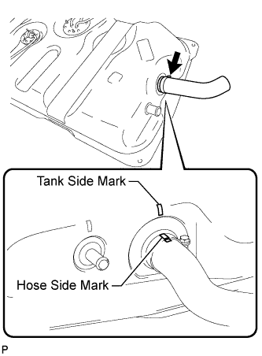 |
Install the hose to the fuel sub tank as shown in the illustration.
 |
| 2. INSTALL NO. 3 FUEL HOSE |
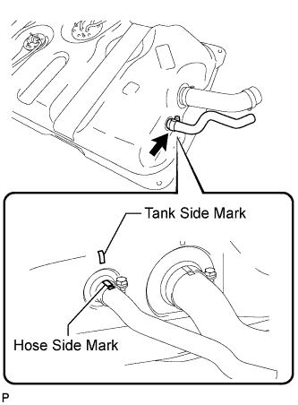 |
Install the fuel hose to the fuel sub tank as shown in the illustration.
|
| 3. INSTALL FUEL TANK BREATHER HOSE |
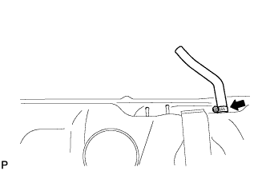 |
Install the breather hose to the fuel sub tank.
| 4. INSTALL FUEL AND EVAPORATION VENT TUBE SUB-ASSEMBLY |
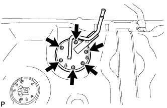 |
Install a new gasket to the fuel and evaporation vent tube.
Install the fuel and evaporation vent tube with the 6 bolts.
| 5. INSTALL FUEL TANK EVAPORATION VENT TUBE SUB-ASSEMBLY |
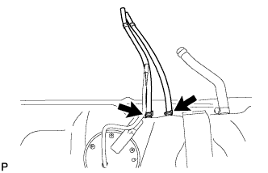 |
Install the 2 fuel tank evaporation vent tubes.
| 6. INSTALL FUEL HOSE |
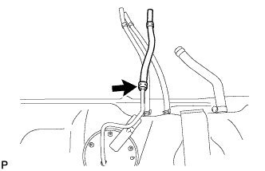 |
| 7. INSTALL FUEL SENDER GAUGE ASSEMBLY |
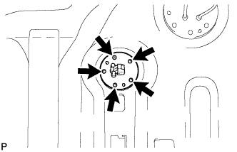 |
Install a new gasket to the sender gauge.
Install the sender gauge with the 5 screws.
| 8. INSTALL FLOOR NO. 3 WIRE |
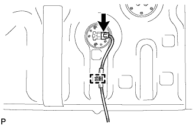 |
Attach the wire harness clamp to the fuel sub tank.
Connect the sender gauge connector.
| 9. INSTALL FUEL SUB TANK SUB-ASSEMBLY |
Set the fuel sub tank on a transmission jack and raise the fuel sub tank.
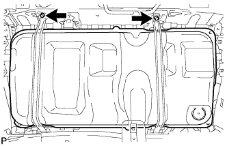 |
Connect the 2 fuel tank bands with the 2 bolts.
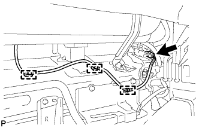 |
Connect the floor No. 3 wire connector.
Attach the 3 wire harness clamps.
| 10. CONNECT FUEL TANK TO FILLER PIPE HOSE |
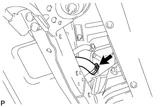 |
Connect the hose to the filler pipe.
| 11. CONNECT NO. 3 FUEL HOSE |
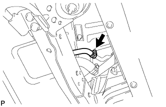 |
Connect the fuel hose to the filler pipe.
| 12. CONNECT FUEL TANK BREATHER HOSE |
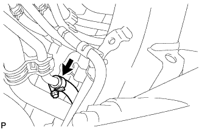 |
Connect the breather hose to the filler pipe.
| 13. CONNECT FUEL HOSE |
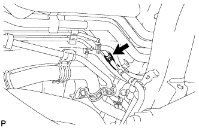 |
| 14. CONNECT FUEL TANK EVAPORATION VENT TUBE SUB-ASSEMBLY |
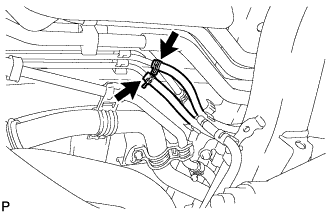 |
Connect the 2 fuel tank evaporation vent tubes.
| 15. INSTALL FUEL TANK CAP ASSEMBLY |
| 16. INSTALL NO. 1 SPARE WHEEL STOPPER |
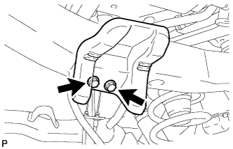 |
Install the spare wheel stopper with the 2 bolts.
| 17. INSTALL SPARE WHEEL CARRIER CROSSMEMBER AND SPARE WHEEL CARRIER BRACKET |
Install the spare wheel carrier crossmember and 2 brackets to the vehicle with the 6 bolts labeled C.
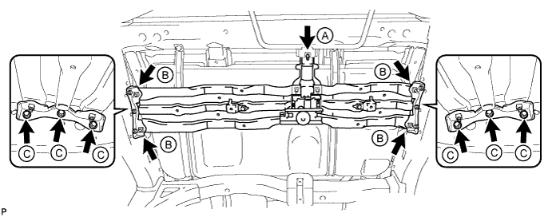
Temporarily install the bolt labeled A, and then tighten the bolt labeled A and bolts labeled B.
| 18. INSTALL TAILPIPE ASSEMBLY |
Install the tailpipe to the 2 exhaust pipe supports.
Set a new gasket to the center exhaust pipe.
 |
Connect the tailpipe to the center pipe with a new clamp.
| 19. CONNECT CABLE TO NEGATIVE BATTERY TERMINAL |
| 20. INSPECT FOR FUEL LEAK |
Connect the intelligent tester to the DLC3.
Turn the engine switch on (IG) and intelligent tester ON.
Enter the following menus: Powertrain / Engine and ECT / Active Test / Activate the Fuel Pump Speed Control.
Check that there are no fuel leaks after doing maintenance anywhere on the fuel system.
| 21. INSPECT FOR EXHAUST GAS LEAK |
| 22. INSTALL SPARE TIRE |